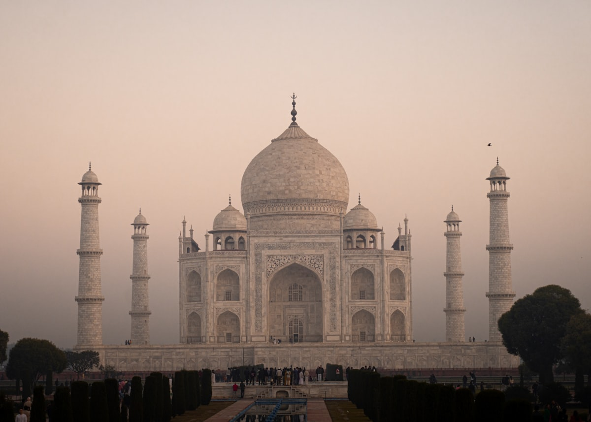
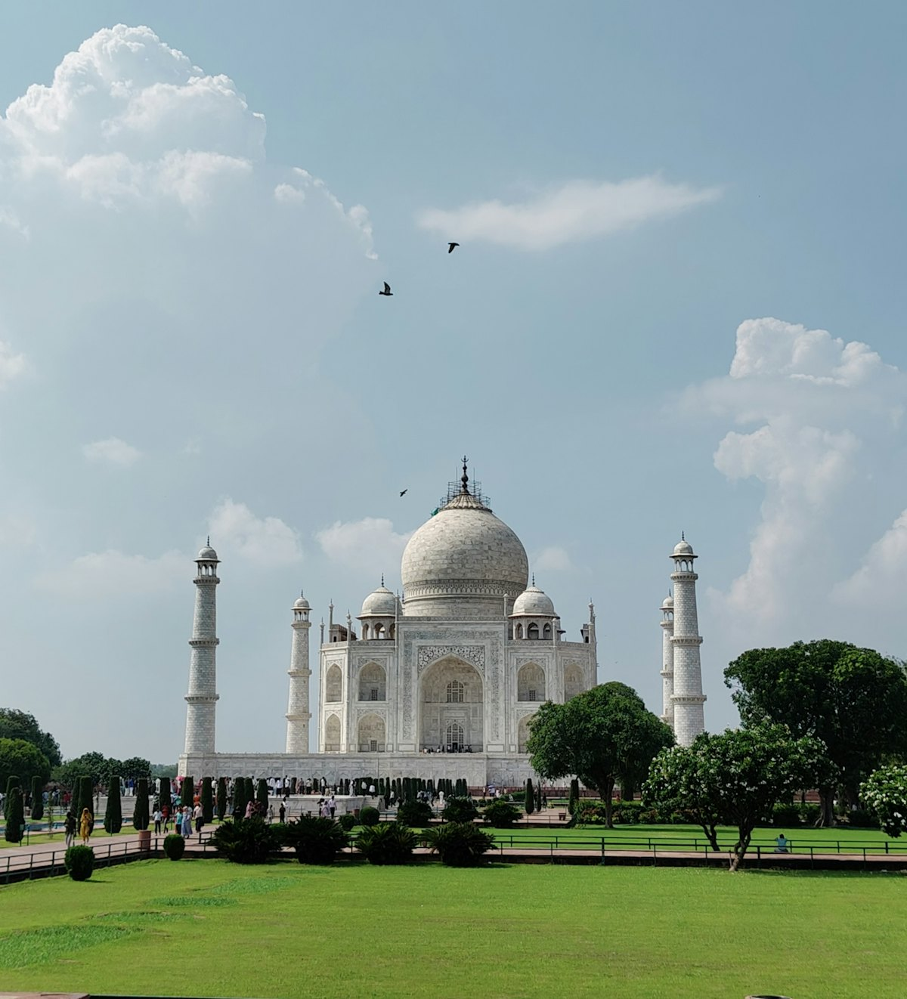
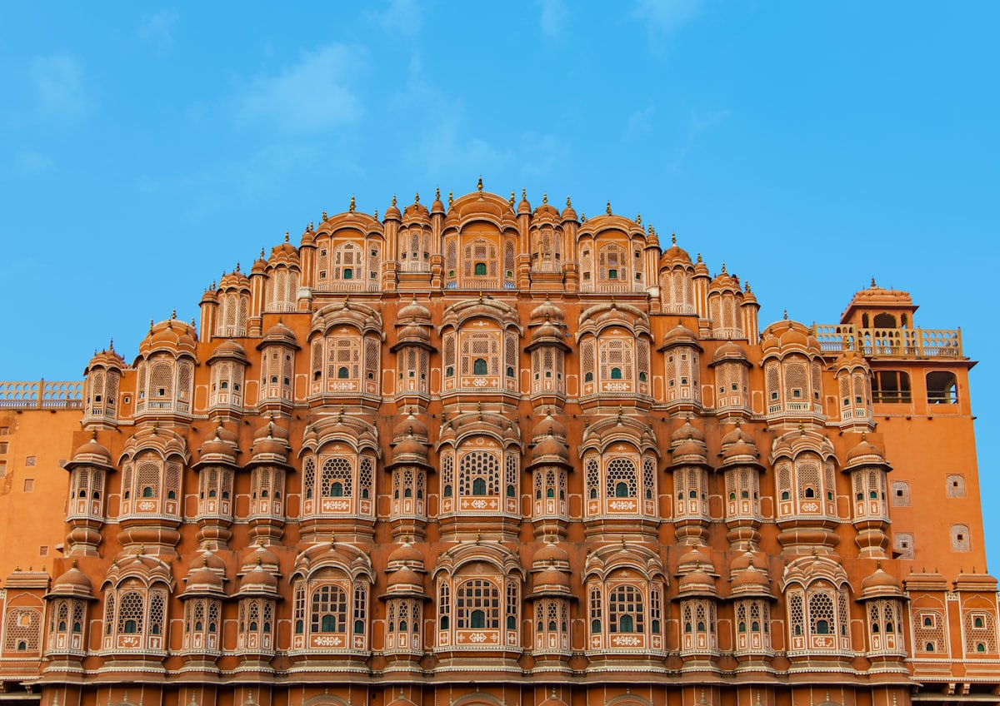
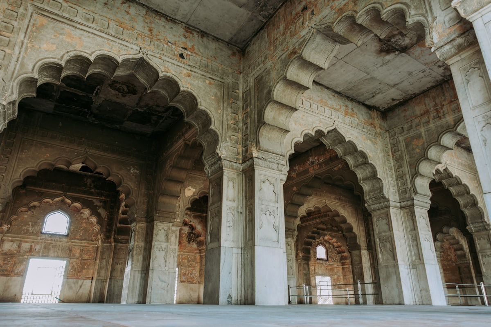
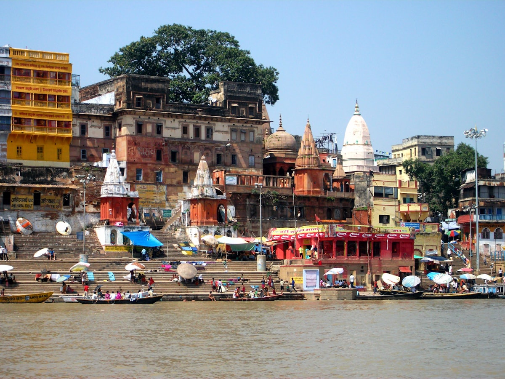
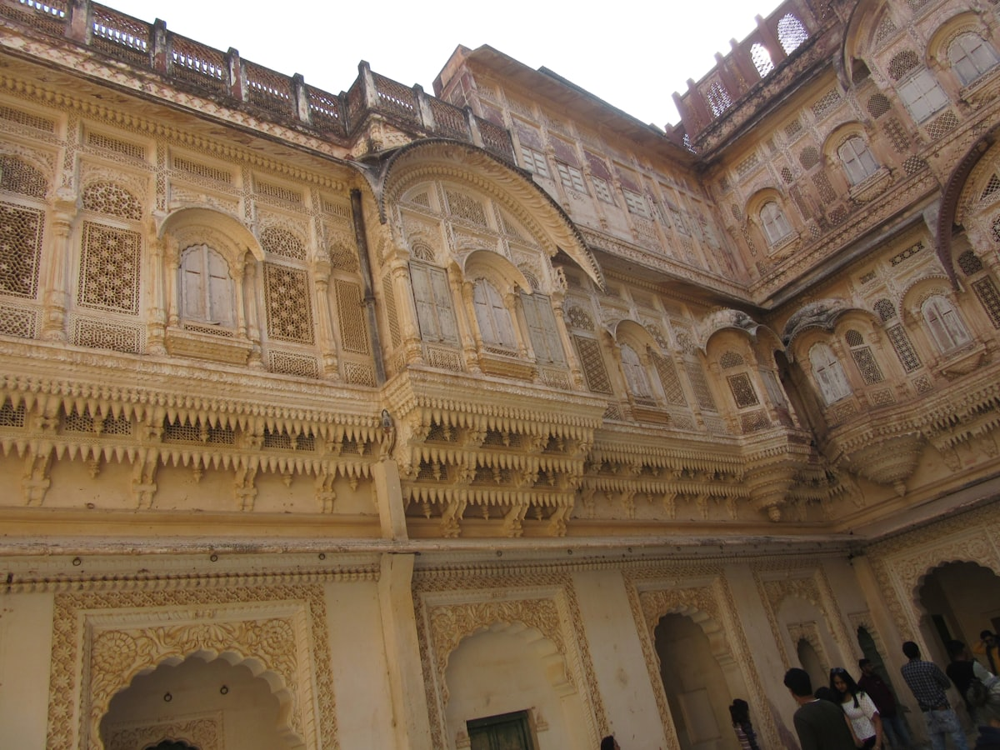
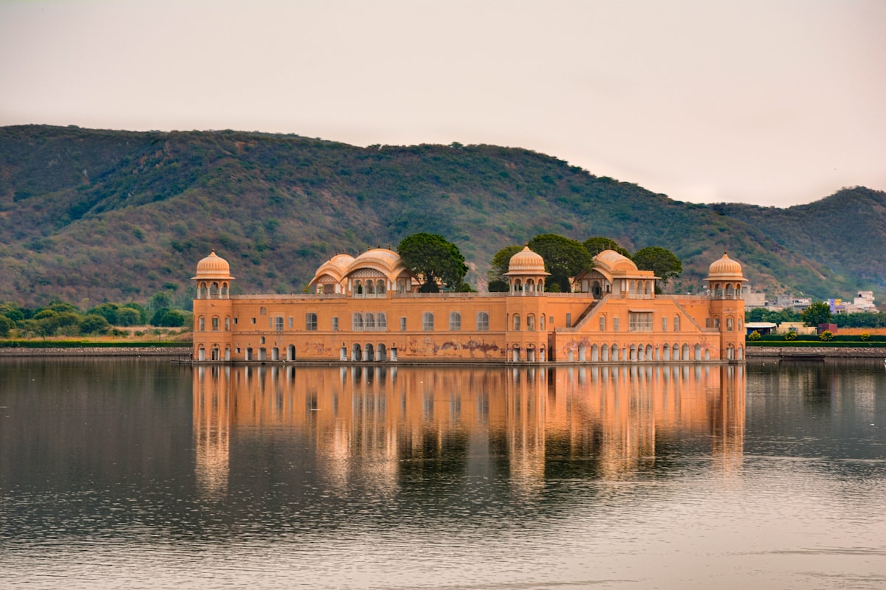
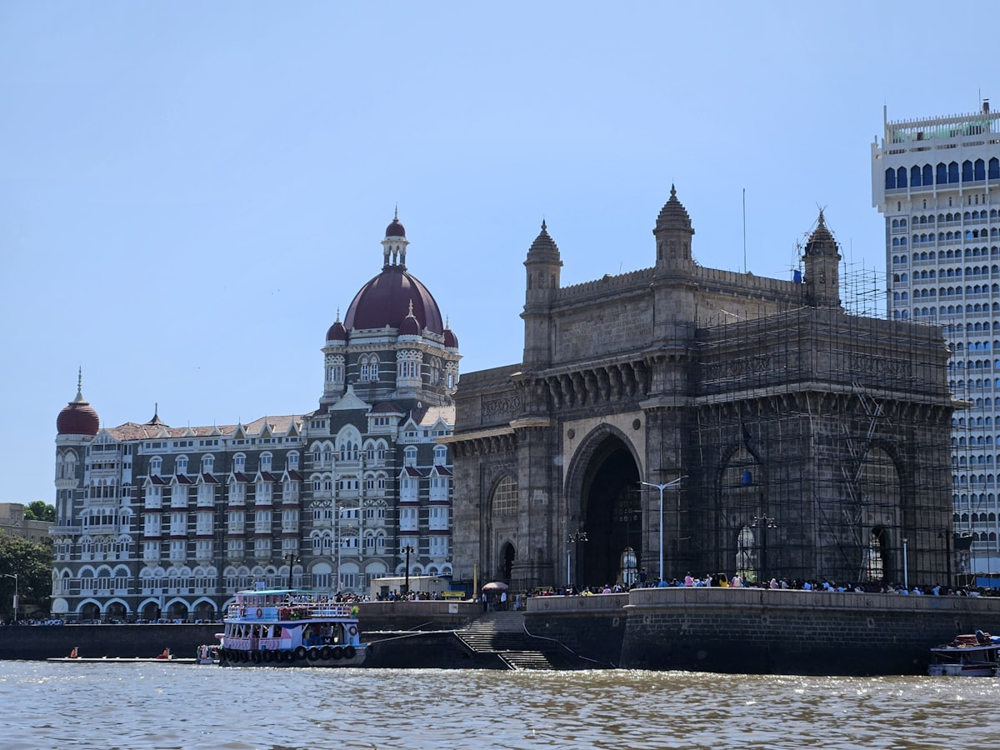

| 事项 | 结论 |
|---|---|
| 事项 | 结论 |
| 签证（最关键） | 印度 e-Visa（电子签）：线上申请、3–5 个工作日审批，30 天单次约 25–40 美元；护照有效期需 6 个月以上 |
| 时差 | 印度标准时（IST）比北京慢 2.5 小时；全国单一时区（无夏令时） |
| 电源插座 | 印度 C/D 型（两/三圆脚），230V 50Hz；国内充电器需转换插头 |
| 货币 | 印度卢比 INR，1 卢比 ≈ 0.085 元人民币（1 元 ≈ 11.8 卢比）；小摊现金为主，备 500–1000 卢比零钱 |
| 推荐方案 | 德里 3 天 + 阿格拉 2 天 + 斋普尔 3 天 + 焦特布尔 2 天 + 乌代布尔 3 天 + 瓦拉纳西 3 天 + 孟买 4 天 + 果阿 4 天 |
| 返程约束 | 第 25 天从孟买/德里返京；孟买直飞北京约 7h，或经德里/迪拜转机 |
| 行程链 | 德里 → 阿格拉 → 斋普尔 → 焦特布尔 → 乌代布尔 → 瓦拉纳西 → 孟买 → 果阿 |
| 预算（人均） | 经济 20000–28000 ／ 标准 33000–45000 ／ 舒适 60000–90000（人民币） |
| 三件提前事 | ① 办 e-Visa ② 订泰姬陵/琥珀堡门票（官网提前 1 天）③ 火车票（IRCTC/代理）提前 1–2 个月抢 Tier-1 卧铺 |
| 季节提醒 | 11–3 月旱季最佳（泰姬陵晴天、拉贾斯坦 15–25℃）；4–6 月酷热（40℃+）尽量避开；7–9 月雨季（瓦拉纳西涨水、孟买暴雨） |
| 支付 | 大城市信用卡/UPI 普及，小摊现金为主（准备 500–1000 卢比零钱）；换汇找官方点，ATM 认「Exchange」标识 |
以下为 25 天 24 晚的推荐节奏：北段「金三角+拉贾斯坦」用火车衔接（德里→阿格拉→斋普尔→焦特布尔→乌代布尔），中段飞恒河圣地瓦拉纳西，末段飞西海岸孟买与果阿收尾。每日主景点 ≤2 个，热季中午安排室内与休整。
| 日期 | 行程 | 过夜地 | 主题 |
|---|---|---|---|
| D1 抵德里 | 北京✈德里（直飞约 6–7h），入住康诺特广场附近，印度门夜景 | 德里 | 抵达+预热 |
| D2 | 北德里：红堡 → 贾玛清真寺 → 月光集市街拍 | 德里 | 莫卧儿日 |
| D3 | 南德里：顾特卜塔 → 胡马雍陵 → 印度门/总统府外观 | 德里 | 世界遗产日 |
| D4 | 德里✈阿格拉（火车约 2h），下午泰姬陵日落 | 阿格拉 | 泰姬陵初见 |
| D5 | 泰姬陵日出 → 阿格拉堡 → 小泰姬陵 | 阿格拉 | 泰姬陵日 |
| D6 | 阿格拉✈斋普尔（火车约 4h），傍晚城市宫殿 | 斋普尔 | 移师粉城 |
| D7 | 琥珀堡（吉普/大象上堡）→ 水之宫殿 → 阶梯井 | 斋普尔 | 琥珀堡日 |
| D8 | 斋普尔：风之宫 → 简塔·曼塔天文台 → 集市购物 | 斋普尔 | 粉城漫游 |
| D9 | 斋普尔✈焦特布尔（火车约 5h），下午老城漫步 | 焦特布尔 | 移师蓝城 |
| D10 | 梅兰加尔古堡（半天，世界级）→ 蓝城小巷街拍 | 焦特布尔 | 古堡日 |
| D11 | 焦特布尔✈乌代布尔（火车约 5–6h），傍晚皮丘拉湖 | 乌代布尔 | 移师白城 |
| D12 | 乌代布尔：城市宫殿 → 贾格迪什神庙 → 湖畔漫步 | 乌代布尔 | 宫殿日 |
| D13 | 乌代布尔：湖心岛 → 日落游船 → 湖边休闲 | 乌代布尔 | 湖上日 |
| D14 | 乌代布尔✈瓦拉纳西（经德里转机约 5–7h），傍晚恒河畔 | 瓦拉纳西 | 移师圣地 |
| D15 | 瓦拉纳西：恒河日出船游 → 鹿野苑 → 老城小巷 | 瓦拉纳西 | 恒河日 |
| D16 | 瓦拉纳西：达萨瓦梅朵夜祭（晚间）→ 白日自由街拍 | 瓦拉纳西 | 夜祭日 |
| D17 | 瓦拉纳西✈孟买（直飞约 1.5–2h），下午印度门+海滨大道 | 孟买 | 移师西岸 |
| D18 | 孟买：象岛石窟（渡轮+石窟，世界遗产） | 孟买 | 象岛日 |
| D19 | 孟买：威尔士亲王博物馆 → 泰姬玛哈酒店外景 → 珠宝街 | 孟买 | 博物馆日 |
| D20 | 孟买：达拉维导览（可选）或 宝莱坞电影城 → 海滨购物 | 孟买 | 城市日 |
| D21 | 孟买✈果阿（约 1.5h），入住北果阿海滩，日落 | 果阿 | 移师海滩 |
| D22 | 果阿：老果阿教堂群 → 南果阿海滩（帕洛莱姆） | 果阿 | 教堂日 |
| D23 | 果阿：海滩水上活动 + 自由放松（瑜伽/落日酒吧） | 果阿 | 休闲日 |
| D24 | 果阿✈孟买（转机）或 直达航班，休整购物 | 孟买 | 返程前 |
| D25 返程 | 孟买✈北京（直飞约 7h 或经德里转机 10–13h），入境到家 | — | 收尾 |
以下为 25 天全程的逐小时执行时间线，可当作「当天打开照着走」的清单。标注 ※ 的可选项视体力与天气取舍。
| 时间 | 事项 |
|---|---|
| 08:30–15:00 | 北京✈德里（直飞约 6–7h，国航/印航；时差比北京慢 2.5h） |
| 15:30–17:00 | 机场快线/打车到康诺特广场（约 1h，打车 600–900 卢比），入住酒店 |
| 17:30–19:00 | 印度门（免费）：德里地标，日落时金光 |
| 19:30–21:00 | 晚餐：康诺特广场/萨罗吉尼市场 |
| 21:00 | 回酒店休息，适应时差 |
| 时间 | 事项 |
|---|---|
| 08:00–10:30 | 红堡（外国人约 600 卢比）：莫卧儿王城，大理石宫殿与花园 |
| 10:30–12:30 | 贾玛清真寺（免费，登塔另收 100 卢比）：印度最大清真寺之一 |
| 12:30–14:00 | 午餐：月光集市老字号（羊肉咖喱/烤串） |
| 14:00–16:00 | 月光集市（Chandni Chowk）：香料、纱丽、珠宝街拍 |
| 16:30–18:30 | 红堡广场日落+水景喷泉（免费） |
| 19:00 | 晚餐：康诺特广场印度餐厅 |
| 时间 | 事项 |
|---|---|
| 08:30–11:00 | 顾特卜塔（外国人约 600 卢比）：73m 红砂岩高塔+铁柱 |
| 11:30–13:30 | 胡马雍陵（外国人约 600 卢比）：泰姬陵的灵感之源，花园陵墓 |
| 13:30–15:00 | 午餐：莲花寺附近餐厅 |
| 15:00–17:00 | 莲花寺（免费）：巴哈伊教莲花造型地标 |
| 17:30–19:00 | 总统府/国会大厦外观（免费远观）→ 印度门夜景 |
| 19:00 | 晚餐：德里市内，准备次日阿格拉 |
| 时间 | 事项 |
|---|---|
| 07:00–09:00 | 德里新德里火车站乘加特快列车到阿格拉（约 2h） |
| 09:30–11:30 | 入住酒店、午餐 |
| 12:00–14:00 | 阿格拉堡（外国人约 650 卢比）：莫卧儿红砂岩堡垒，远眺泰姬陵 |
| 14:30–16:30 | 酒店休整（热季避开正午） |
| 16:30–19:30 | 泰姬陵日落（外国人约 1100 卢比）：白色大理石在夕阳下变色 |
| 19:30 | 晚餐：阿格拉老城 |
| 时间 | 事项 |
|---|---|
| 05:30–07:30 | 泰姬陵日出（外国人约 1100 卢比）：晨光中纯净的白色大理石，最佳摄影时段 |
| 07:30–10:00 | 陵园内漫步：中央穹顶、两侧清真寺、月光花园 |
| 10:00–11:30 | 早餐+休息 |
| 11:30–13:30 | 小泰姬陵（免费）：「黑泰姬陵」传说的另一座精致陵墓 |
| 14:00–17:00 | 老城市场购物（大理石镶嵌盒、皮具） |
| 18:00 | 晚餐：阿格拉，准备次日斋普尔 |
| 时间 | 事项 |
|---|---|
| 07:00–09:30 | 阿格拉✈斋普尔（火车约 4h，或包车 5h） |
| 10:00–12:00 | 入住斋普尔老城酒店，午餐 |
| 12:30–15:00 | 酒店休整（热季避开正午） |
| 15:00–17:30 | 城市宫殿（外国人约 500 卢比）：粉色宫殿+服饰博物馆 |
| 17:30–19:00 | 水之宫殿（远观免费）：湖心粉宫日落 |
| 19:30 | 晚餐：斋普尔（拉贾斯坦美食） |
| 时间 | 事项 |
|---|---|
| 07:30–09:00 | 斋普尔出发，琥珀堡（外国人约 500 卢比，含吉普车/大象上堡另收费） |
| 09:00–12:00 | 琥珀堡：镜宫、庭园与城墙，俯瞰峡谷 |
| 12:00–13:30 | 午餐：琥珀堡山脚餐厅 |
| 13:30–15:00 | 返城，参观阶梯井（免费，经典机位） |
| 15:30–17:30 | 水之宫殿湖景/山景茶室休整 |
| 19:00 | 晚餐：斋普尔，次日风之宫 |
| 时间 | 事项 |
|---|---|
| 08:00–10:00 | 风之宫（外国人约 200 卢比）：953 扇窗的粉红立面，街拍机位在对街咖啡馆 |
| 10:00–12:00 | 简塔·曼塔天文台（外国人约 200 卢比）：世界遗产，巨型日晷 |
| 12:00–14:00 | 午餐：Johari 市集附近 |
| 14:00–16:30 | Johari 市集/巴扎：纱丽、蓝染布、宝石饰品购物 |
| 16:30–18:30 | 城市宫殿花园自由 + 老城城墙散步 |
| 19:00 | 晚餐：斋普尔（可看传统舞蹈表演） |
| 时间 | 事项 |
|---|---|
| 07:00–12:00 | 斋普尔✈焦特布尔（火车约 5h） |
| 12:30–14:00 | 入住焦特布尔酒店，午餐 |
| 14:00–17:00 | 萨达尔市集（Sardar Market）：香料、手镯、头巾市场 |
| 17:30–19:30 | 老城日落：蓝白相间的房屋屋顶（免费观景） |
| 19:30 | 晚餐：焦特布尔屋顶餐厅 |
| 时间 | 事项 |
|---|---|
| 07:30–11:30 | 梅兰加尔古堡（外国人约 700 卢比）：世界最壮观堡垒之一，宫室+博物馆+城墙 |
| 11:30–13:00 | 午餐：古堡观景餐厅（俯瞰蓝城） |
| 13:30–15:30 | 古堡下方 老城蓝巷街拍（免费） |
| 15:30–17:30 | 贾斯旺特纪念堂（Jaswant Thada，约 50 卢比）：白色大理石纪念堂 |
| 18:00 | 晚餐：焦特布尔，准备次日乌代布尔 |
| 时间 | 事项 |
|---|---|
| 07:00–12:00 | 焦特布尔✈乌代布尔（火车约 5–6h，或包车 6h） |
| 12:30–14:00 | 入住乌代布尔湖畔酒店（湖景房体验极佳），午餐 |
| 14:30–16:30 | 皮丘拉湖漫步：湖中宫殿外景（Leela Palace） |
| 17:00–19:00 | 加格曼迪尔岛船游（船票约 200–300 卢比）：湖心岛日落 |
| 19:30 | 晚餐：湖畔屋顶餐厅 |
| 时间 | 事项 |
|---|---|
| 08:00–11:30 | 乌代布尔城市宫殿（外国人约 500 卢比）：拉贾斯坦最大宫殿群，湖景窗棂 |
| 11:30–13:30 | 午餐：城市宫殿旁 |
| 13:30–15:30 | 贾格迪什神庙（免费）：17 世纪耆那教雕刻神庙 |
| 15:30–18:00 | 湖畔步行街 + 巴格奥尔·哈维利（旧官邸博物馆，可选） |
| 18:00–19:30 | 皮丘拉湖日落船游（第二次可选，或湖景茶室） |
| 19:30 | 晚餐：湖边餐厅 |
| 时间 | 事项 |
|---|---|
| 08:00–10:00 | 湖上宫殿外景（Taj Lake Palace，不可入内，湖边拍照） |
| 10:00–12:30 | 阿姆拉瓦蒂岛/加格曼迪尔岛船游+岛上午餐（可选） |
| 12:30–15:00 | 湖边咖啡馆休整/画室体验 |
| 15:00–17:00 | 城市宫殿旁露天剧场观景台（免费） |
| 17:30–19:00 | 皮丘拉湖日落（推荐船游第 2 次，光线最美） |
| 19:30 | 晚餐：乌代布尔，准备次日飞瓦拉纳西 |
| 时间 | 事项 |
|---|---|
| 06:30–12:30 | 乌代布尔✈瓦拉纳西（经德里转机，全程约 5–7h） |
| 13:00–15:00 | 入住恒河老城酒店，午餐 |
| 15:30–18:00 | 恒河畔漫步：高台阶梯（Ghats）与寺庙群 |
| 18:00–20:00 | 恒河夜祭（达萨瓦梅朵高台，免费）：圣火、香、铃铛的千年仪式 |
| 20:30 | 晚餐：老城印度菜 |
| 时间 | 事项 |
|---|---|
| 05:30–07:30 | 恒河日出船游（包船约 300–500 卢比）：晨光、沐浴者、晨祭 |
| 07:30–09:00 | 早餐+休息 |
| 09:30–12:00 | 鹿野苑（门票约 100 卢比）：佛陀初转法轮地，佛教圣地 |
| 12:00–13:30 | 午餐：老城 |
| 14:00–17:00 | 老城小巷：丝绸店、手绘、恒河小吃街拍 |
| 19:00 | 晚餐：老城，次日再看夜祭或自由 |
| 时间 | 事项 |
|---|---|
| 08:30–11:00 | 自由：恒河高台慢走，看瑜伽/占卜/理发摊 |
| 11:00–13:00 | 午餐：老城传统塔利（Thali） |
| 13:30–16:30 | 购物：恒河丝绸、手工铜器、恒河水瓶（纪念） |
| 16:30–18:00 | 晚餐前休息 |
| 18:00–20:00 | 恒河夜祭（第二晚，不同高台视角，免费） |
| 20:30 | 回酒店，准备次日孟买 |
| 时间 | 事项 |
|---|---|
| 08:00–10:00 | 瓦拉纳西✈孟买（直飞约 1.5–2h） |
| 10:30–12:00 | 入住孟买南区酒店，午餐 |
| 12:30–15:00 | 印度门（免费）：泰姬玛哈酒店旁的海门地标 |
| 15:30–18:00 | 海滨大道（Marine Drive）：孟买「女王项链」日落 |
| 19:00 | 晚餐：孟买滨海餐厅 |
| 时间 | 事项 |
|---|---|
| 07:30–08:30 | 印度门码头乘渡轮到象岛（约 1h，往返约 200–400 卢比） |
| 09:00–12:00 | 象岛石窟（外国人约 600 卢比）：湿婆神像与石窟雕刻 |
| 12:00–13:30 | 象岛岛上午餐/返程 |
| 14:00–16:00 | 下午休整 |
| 16:30–18:30 | 威尔士亲王博物馆外景 → 印度门黄昏 |
| 19:00 | 晚餐：Colaba 区 |
| 时间 | 事项 |
|---|---|
| 08:30–12:00 | 威尔士亲王博物馆（约 100 卢比）：印度艺术与殖民史 |
| 12:00–14:00 | 午餐：Colaba 咖啡馆 |
| 14:30–17:00 | 泰姬玛哈酒店外景（免费，需安检）→ 拱门广场 |
| 17:00–19:00 | 克劳福德市场（免费）：百年铁架市场购物 |
| 19:30 | 晚餐：孟买（滨海大道夜景） |
| 时间 | 事项 |
|---|---|
| 08:30–11:30 | 达拉维导览（可选，含 NGO 向导约 800–1500 卢比）：孟买「亚洲最大贫民窟」的另一面 |
| 11:30–14:00 | 午餐：孟买海鲜（当地咖喱蟹） |
| 14:30–17:00 | 宝莱坞电影城参观（可选，约 1500–3000 卢比）或 海滨购物 |
| 17:30–19:00 | 海滨大道日落（第二次）+ 街头小吃 |
| 19:30 | 晚餐：孟买，准备次日果阿 |
| 时间 | 事项 |
|---|---|
| 08:00–10:00 | 孟买✈果阿（约 1h20，或乘过夜火车） |
| 10:30–12:30 | 入住北果阿海滩酒店（巴加/卡兰古特），午餐 |
| 13:00–16:00 | 海滩自由：游泳、冲浪、躺椅 |
| 17:00–19:30 | 海滩日落 + 沙滩酒吧 |
| 20:00 | 晚餐：海滩海鲜 |
| 时间 | 事项 |
|---|---|
| 08:00–10:30 | 老果阿（Old Goa，免费）：圣卡塔琳娜教堂等世界遗产教堂群 |
| 10:30–12:30 | 香料园参观（可选，约 300–500 卢比） |
| 12:30–14:30 | 午餐：南果阿海鲜村 |
| 14:30–17:00 | 帕洛莱姆海滩（Palolem）：椰林环绕的南果阿最美海滩 |
| 18:00 | 返北果阿，晚餐：海滩餐厅 |
| 时间 | 事项 |
|---|---|
| 08:30–10:30 | 晨间瑜伽（海滩/酒店，可选） |
| 10:30–13:00 | 海滩水上活动：香蕉船/皮划艇/浮潜（约 500–1500 卢比） |
| 13:00–16:00 | 午餐+酒店泳池/午睡 |
| 16:30–19:00 | 沙滩漫步 + 落日酒吧（Feni 果阿米酒，果阿特产） |
| 19:30 | 晚餐：果阿葡萄牙融合菜 |
| 时间 | 事项 |
|---|---|
| 08:00–10:00 | 果阿海滩最后一次晨泳/日出 |
| 10:00–12:30 | 购物：果阿腰果、Feni 酒、印花布 |
| 12:30–14:00 | 午餐 |
| 14:30–17:00 | 果阿✈孟买（转机）或 乘晚班直达，入住转机酒店 |
| 18:00–20:00 | 孟买最后晚餐：滨海大道夜景 |
| 21:00 | 打包行李，次日返程 |
| 时间 | 事项 |
|---|---|
| 07:30–09:00 | 退房，孟买机场 |
| 09:00–10:30 | 机场免税店最后采购（大吉岭茶、香料、手工银饰） |
| 11:00–18:00 | 孟买✈北京（直飞约 7h，印航/国航）或 经德里/迪拜转机 10–13h |
| 18:00–19:00 | 入境到家 |
必去（必去）/ 顺路（顺路）/ 可跳过（可跳过）。

必去
必去
顺路
顺路
必去
顺路
顺路图片为 Unsplash 主题图（泰姬陵、红堡、琥珀堡、焦特布尔蓝城、乌代布尔、恒河、孟买印度门、果阿海滩均为印度实景），用于页面配图。更多免费景点：印度门、莲花寺、恒河夜祭、贾格迪什神庙、海滨大道、老果阿教堂群。
点击左侧节点可在地图上定位；点击地图 marker 会高亮对应节点。坐标为 WGS-84 转 GCJ-02 纠偏后标注。
以下为单人、不含购物的估算，人民币计价；出发地基准北京。汇率按 1 印度卢比 ≈ 0.085 元人民币估算。往返国际机票按淡季 3500–5000 元计，国内段 5 程（含转机）合计 2500–4500 元。
| 项目 | 经济（20000–28000） | 标准（33000–45000） | 舒适（60000–90000） |
|---|---|---|---|
| 往返机票 | 北京⇄德里 3500–4500 | 含孟买往返 4500–6500 | 直飞商务/灵活 12000–20000 |
| 国内段机票（5 程） | 2500–4000（提前 1 个月订） | 4000–5500（灵活时段） | 6500–9500（任意时间） |
| 住宿（24 晚） | 青旅/经济酒店 100–180/晚 | 三星/精品酒店 250–500/晚 | 遗产酒店/湖景房 800–2500/晚 |
| 交通（火车/包车） | 火车卧铺+突突 1500–2500 | 火车+Uber+包车 3000–4500 | 全程包车+国内飞 7000–12000 |
| 门票 | 基础世界遗产约 800–1500 | 含泰姬陵/琥珀堡/象岛 2500–4000 | 全含+深度导览 5000–9000 |
| 餐饮（25 天） | 街头+酒店餐 2500–4000 | 正常下馆子 6000–9000 | 酒店自助+餐厅 15000–25000 |
带孩子首选安全省力的「金三角直连」：德里—阿格拉—斋普尔（全程 2–4h 火车），砍掉长途跋涉的瓦拉纳西与果阿。保留泰姬陵、琥珀堡（孩子最爱吉普上堡）、莲花寺，住五星连锁（安全卫生有保障）。严格只喝瓶装水、餐厅只吃熟食，备好儿童肠胃药。印度寺庙安检与脱鞋频繁，给孩子穿好脱的鞋。
排灯节期间（Diwali，约 10 月底–11 月初）全印点灯庆祝：德里/斋普尔街道灯光如昼、泰姬陵有特别灯光秀、斋普尔琥珀堡有灯光节（限时开放）。此时是印度最美季节（气候宜人+节日氛围），但机票住宿翻倍，务必提前 2 个月订。可替换：若嫌人多，选排灯节后 2–3 周（11 月中旬）错峰出行，天气仍理想。
| 方式 | 时长 | 参考价 | 备注 |
|---|---|---|---|
| 直飞（推荐） | 北京→德里约 6–7h / 孟买约 7h | 往返 3500–5000 元 | 国航/印航，德里、孟买可选 |
| 转机 | 10–14h | 3000–4500 元 | 经广州/上海/迪拜/曼谷，便宜但费时 |
| 国际铁路 | — | — | 中国到印度无陆路直达，只能飞机 |
| 区域 | 价格/晚 | 优点 | 短板 |
|---|---|---|---|
| 德里·康诺特广场 | 经济 120–250 / 标准 300–600 | 市中心交通枢纽，餐饮购物方便 | 老城环境嘈杂 |
| 阿格拉·泰姬陵东门 | 经济 150–300 / 标准 350–700 | 步行到泰姬陵看日出 | 区域较乱，打车注意 |
| 斋普尔·老城/城市宫殿边 | 经济 150–300 / 标准 350–700 | 粉色古城步行圈 | 老城巷窄车多 |
| 焦特布尔·老城 | 经济 100–250 / 标准 300–650 | 屋顶餐厅看蓝城 | 阶梯多，行李难拖 |
| 乌代布尔·湖畔 | 经济 200–400 / 标准 500–1200 | 湖景房体验极佳 | 湖景溢价明显 |
| 瓦拉纳西·恒河高台 | 经济 150–300 / 标准 350–800 | 夜祭步行可达 | 恒河畔清晨较吵 |
| 孟买·Colaba/南区 | 经济 200–400 / 标准 500–1000 | 印度门/博物馆步行圈 | 南区酒店老旧的多 |
| 果阿·北果阿海滩 | 经济 150–300 / 标准 350–800 | 海滩酒吧热闹 | 旺季一房难求 |